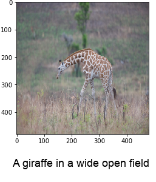
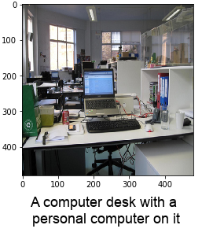
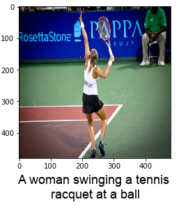
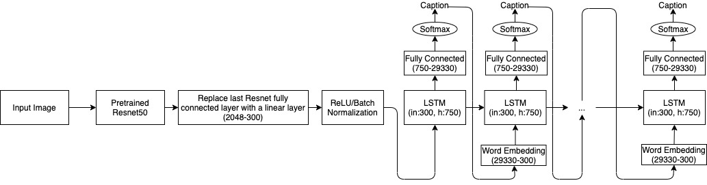
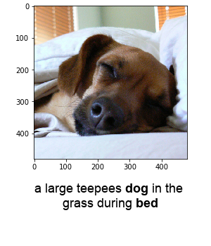
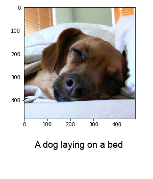

Triton Image Captioning Network
Triton Image Captioning Network is a neural network trained on ~60,000 images and ~500,000 captions from the Microsoft Common Objects in Context (COCO) dataset. The general structure of the network consists of a convolutional neural network (CNN) which encodes the features of an image into a vector, and then passes this feature vector to a long-short-term-memory (LSTM) network which then produces the sentence representing the features of the image. After hundreds of hours of training and weeks of hyperparameter tuning, we were able to create a network that reliably, and accurately captions images whose subjects are as varied as wildlife, office spaces and sports imagery.



Our team created TICN to meet the growing demand for quality captions in the digital age. As media of all forms increasingly moves online, large segments of the population
are left behind as a result of the lack of proper web accesibility. Yet with over 500 hours of video uploaded to Youtube alone every minute, captioning each video manually is
all but impossible and thus we must look for automated alternatives. We thus seek to apply the latest in deep learning technology to solve the task of novel image captioning.
Team
Daniel Shvarts
Blake Lewis
Chinmay Shah
Minh Tran Quoc
Ruoyu Xu
Neural Network Architecture

To make a neural network capable of addressing the task of novel image captioning we first needed a network that could identify the objects within a
given image. Fortunately, CNN's are perfectly suited for this task, as their design enables them to look at various region of the image, identify the features
present within that region, and use the features to identify the objects within that image. Rather than having to train a CNN from scratch, we instead chose to use
the pretrained Resnet50 model available in Pytorch, which is a revolutionary, award-winning architecture introduced in 2015 and will be more than suitable for our purposes.
With the object identification out of the way, we next needed to figure out a way to take the output of the CNN representing the objects within the image, and create
a sentence describing the objects whose structure is a valid sequence. Thus rather than outputting nonsense like "boy ball catch boy ball", the network would output "a boy catching a ball".
This order dependence is task most suited for LSTM's, whose structure enables them learn what info to propogate forward at each step. Thus an LSTM can learn that after
outputting the words "a boy catching a", the next logical word is "ball".
By combining the CNN with an LSTM we arrive at the classic CNN-LSTM image captioning model. After the image is passed through the CNN, the output
is a vector which represents features of the input image. This feature vector then serves as the first input into the LSTM, which will generate a sequence
of words representing the features in the image. Each LSTM cell outputs a single word, which then serves as the input for the next LSTM cell along with a modified feature vector.
Training and Hyperparameter Tuning
Needless to say, the initial network performance was pretty bad...
It even tried to cheat by spamming "<start>", which designates the start of a sentence, and because all
captions had to begin with "<start>", it's error rate went down.
Eventually it learned enough to identify some of the objects in the images and even create semi-coherent sentence structure.

And after hours of training...
Wow, that's pretty good!
Wow, that's pretty good!

Now look at it go!

Results
Cherry picking some good image captions is one thing, but what about a quantitative evaluation of our network's performance? For that we used Bilingual evalution understudy
(BLEU) scores which are the field standard for assessing the quality of machine generated text. There are variaty of BLEU scores, but the general idea is that they range from
0 to 1 and the higher the score the more like human speech the text is. Thus without further ado, here are the BLEU scores for serveral of our trained models:
| LSTM w/ self-trained embedding | LSTM w/ pre-trained embedding | |
|---|---|---|
| Deterministic BLEU1 | 84.31 | 83.52 |
| Stochastic (0.1) BLEU1 | 84.30 | 83.67 |
| Stochastic (0.5) BLEU1 | 83.73 | 83.46 |
| Deterministic BLEU4 | 36.78 | 36.80 |
| Stochastic (0.1) BLEU4 | 36.83 | 36.66 |
| Stochastic (0.5) BLEU4 | 34.41 | 34.49 |
Next Steps
Improve network performance via additional training
Our current network was only trained on a 1/5th of the available dataset in order save time. By training the network on the full dataset the network will be exposed to more
image subjects and sentence structures and thus better learn to represent images through text.
Train network to caption videos
We can begin training the network to caption videos by representing each frame as a single image and concatenating the feature representation of each frame together to use as
input into the LSTM. Undoubtably such training would be slow, thus further research is required to improve the training time.
What I Learned
Training neural networks is hard...but rewarding!
Anyone who has experience with neural nets knows that this is a given, but it really has to be said. There are a million different reasons why a neural net
can fail and debugging this failure is a nightmare. Consulting the expert advice of our fellow computer science PhD students and referring to
Dive into Deep Learning were critical steps needed to get our network running, and once that network gets running and training there really is no better feeling.
Prioritizing planning and collaboration
With something as complicated as neural nets, you can't have a single developer go in all gung ho and expect to have a working neural net in an afternoon. This was especially true in our
case as designing an image captioning neural net required days of planning and designing the architecture of the network to fufill our needs. Should we use word embedding? Should we use a pre-trained
CNN or train one ourselves? Should we add multiple layers to our LSTM? These were all questions we asked and debated for days, and in doing so, were able to create the high-performing TICN we know and love.